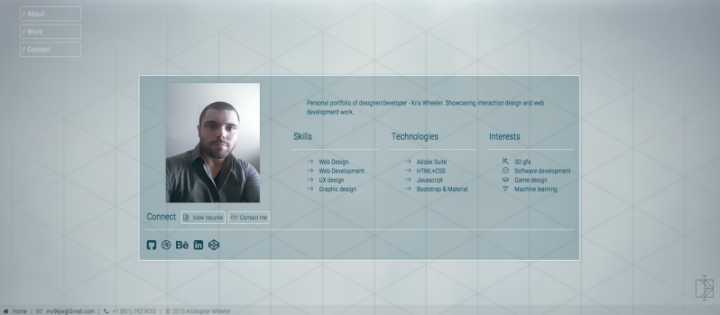

Technical Skills
Education
Web Development
- Mountainland Applied Technology College
-
- Source Control
- Html
- Css
- Bootstrap
- Troubleshooting
- Javascript
- Angular
- Less/Scss
- Back End Development
- Databases
- Security
- Automated Qa
- Coursera
-
- HTML, CSS and Javascript
- Front-End Web UI Frameworks and Tools
- Front-End Javascript Frameworks: AngularJS
- Multiplatform Mobile App Development
- Server-side Development with NodeJS
- Free Code Camp
-
- HTML5, CSS and Javascript
- Responsive Design with Bootstrap
- JQuery
- Object Oriented and Functional Programming
- Algorithm Scripting
- Front End Development
- Automated Testing and Debugging
- AngularJS
- Git
- Node.js and Express.js
- MongoDB
- Full Stack Javascript Projects
3D Art / Digital media
- Futurepoly
-
- Zbrush
- 3D Studio Max
- Texturing
- Modeling
- Character Design
- Environment Design
- UV mapping
- Unreal Engine
- Unity Engine
Certifications
- Placeholder
-
Certification details goes here.
Work Experience
2011
- APL Logistics / Staffmark
-
- General warehouse labor.
- Palette jack operator.
- Clamp truck operator.
- RF scanner and system .
- Loading and unloading trucks.
- Manually stacking and wrapping palettes with product in accordance to item orders.
- Inventory management.
- Dock maintenance.
- Sorting damaged product.
- Cinemark Movies 14
-
- Operating and maintaining film projectors.
- Working as a cashier in concession & ticket booth.
- Checking & cleaning theaters.
- Stocking and preparing food items in concession area.
- Splicing film reels.
- General cleaning.
2009
- D.H. Loder Construction
-
- General construction labor.
- Concrete pours and finishing.
- Distributed and utilized building materials, machinery, and tools.
- House additions & repairs such as electrical, plumbing, drywall, and painting.
- Maintained a clean and safe work area.
- Proficient with most hand and power tools.
2008
- Pro Flo Heating and Air
-
- Assisted in maintenance, repair and installation of heating and air conditioning units.
- Transportation of units and parts.
- Engaged in troubleshooting when needed to make system work appropriately.
- Performed HVAC system repairs and maintenance as needed.
- Replaced older HVAC systems with newer ones.
- Punctual with appointments and installation schedules.
- Installed duct work needed for systems.
- Executed job in a friendly manner.
Projects

- Personal Portfolio
-
- Responsive design(using Bootstrap)
- Jquery events
- Hover animations
- Horizontal Snap Scrolling
- Multiple ways to navigate(keyboard, mousewheel, click & drag, menu, nav arrows)
- Parallax background effect
- Project gallery
- Contact form
- Placeholder
-
- [ feature ]
- [ feature ]
- [ feature ]
- [ feature ]
- [ feature ]
- [ feature ]